User Guide
Written by the wonderful Honelle cause she knows how much I hate writing user guides. Everyone say thank you!
How to use the annotator
Look for your favourite Fic on AO3. Download it as HTML.
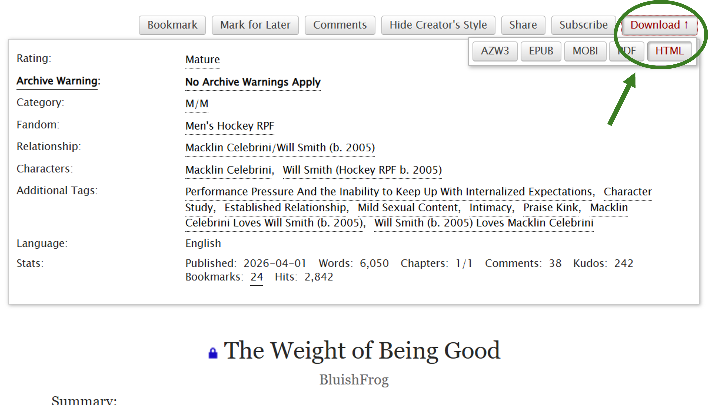
Navigate to the Annotator. Upload the html file.
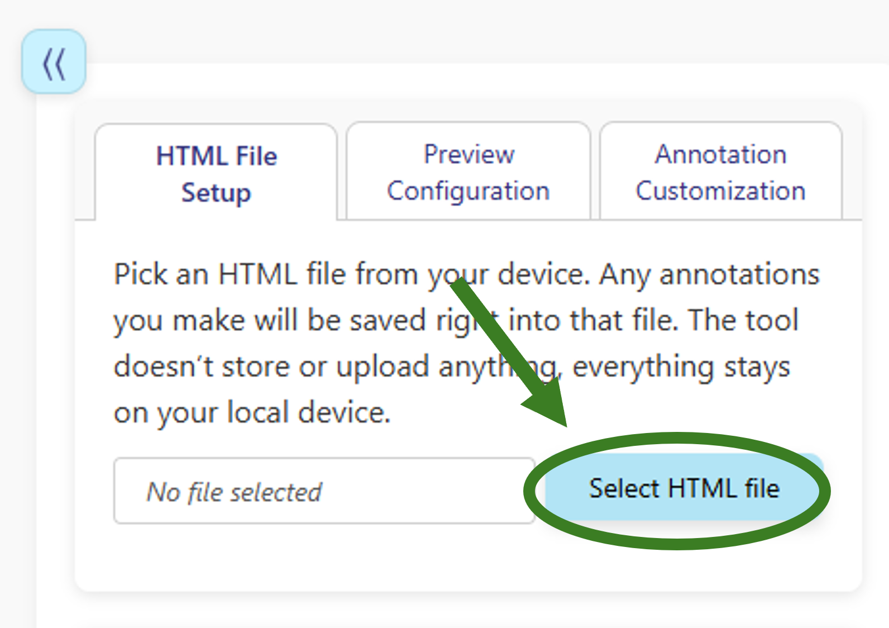
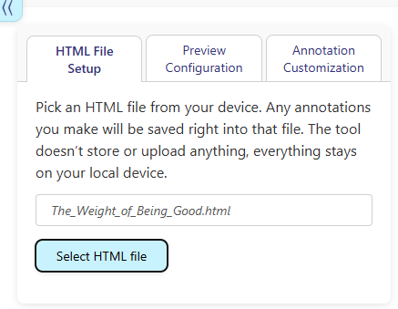
You should now see the Fic you chose and you will be able to annotate it as much as you want.
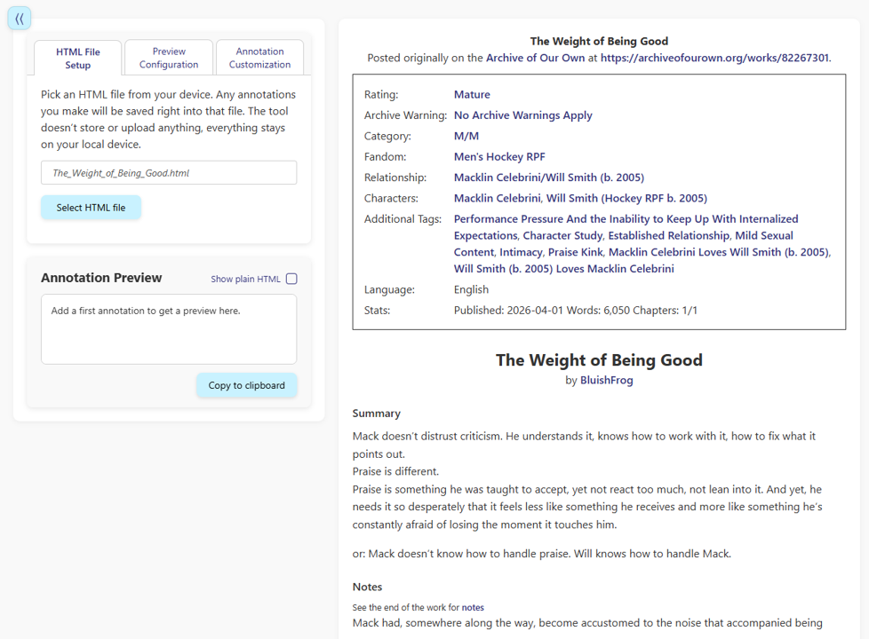
Highlight the section you want to annotate. This can be a single letter or a whole paragraph—the world is your oyster! (Don’t try more than a paragraph though. There are limits to your power…) A Pop-Up will appear where you can write your comment.
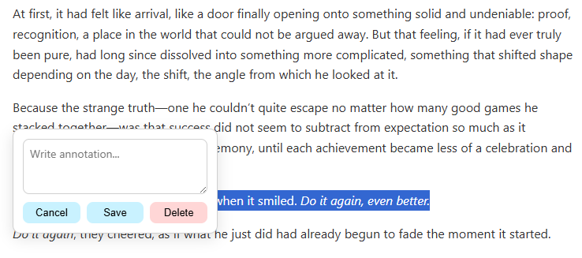
Pour all your love into the comment! Don’t forget to save it.
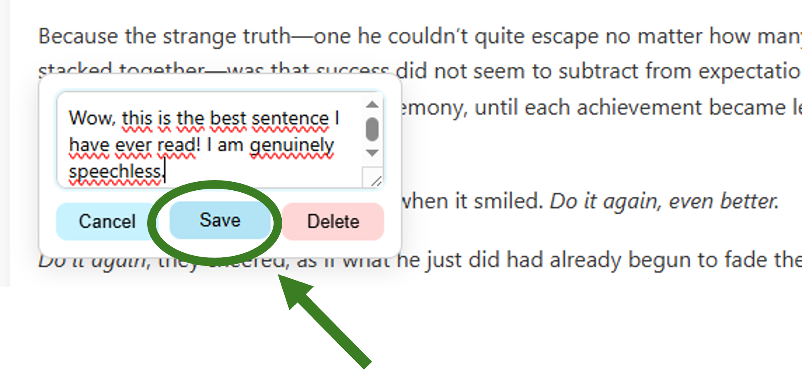
For the first comment you leave, you need to confirm that changes are allowed to be saved.
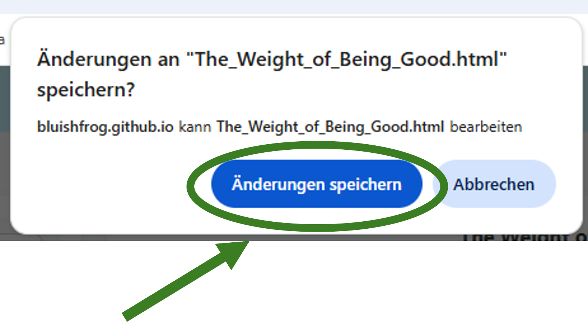
(Sorry, only have this in German…)
You comment will now show up in the Annotation Preview on the left.
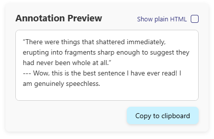
In case you want to change or delete a comment, just click on the highlighted section again.
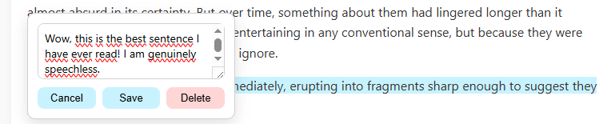
If you want to change the way you annotation look, you can do so in the Annotation Customization . With a little bit of html knowledge, you can adjust the comments to your liking!
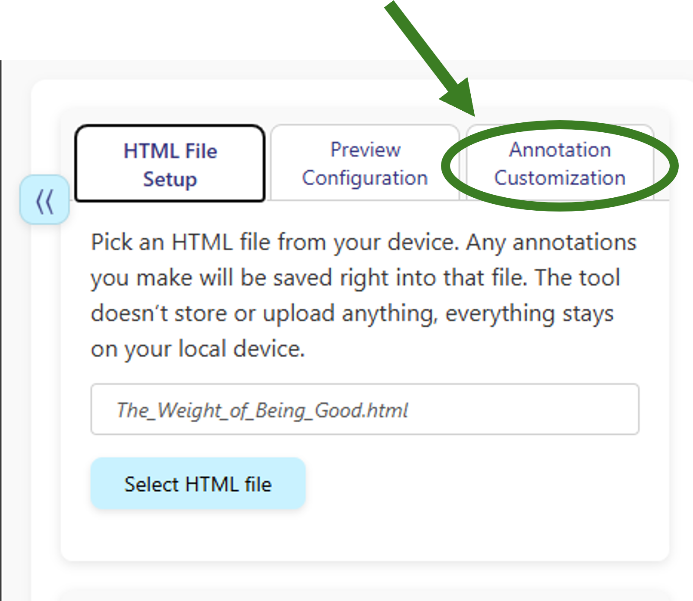
If you get tired during reading, don’t worry, you can come back another time and finish annotating the Fic. Just upload the html file again, it will have your previous comments saved!
Once you have finished the Fic and you’re happy with your annotation, you can copy them to your clipboard and paste them into the AO3 comment box.
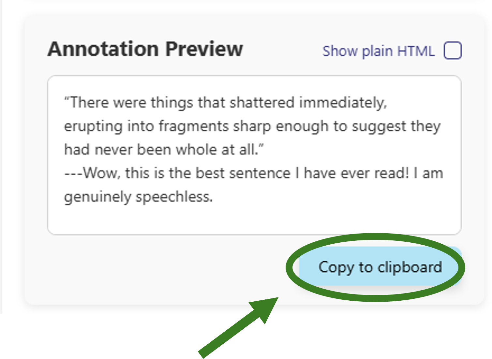
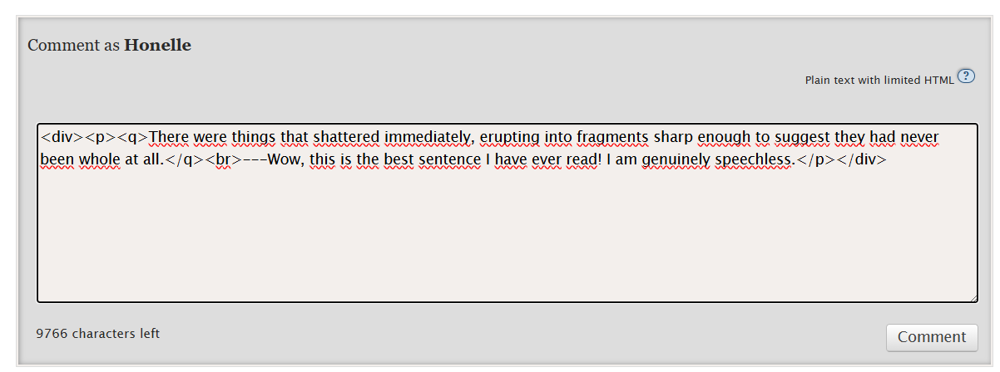
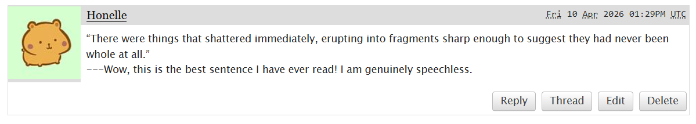
Now get to commenting :D
And if you have any questions, reach out!
Last updated: 2026-04-10